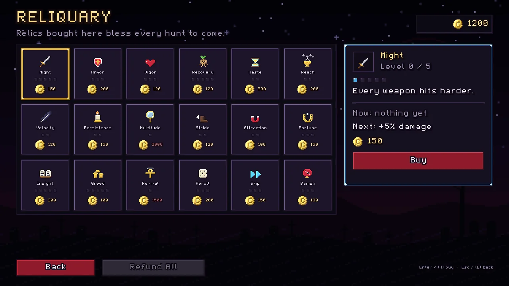
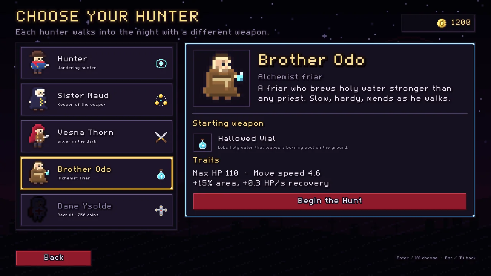

Save, Toko, Hunter dan Audio
Fase terakhir membuat game punya ingatan dan suara. Koin dari setiap run disimpan, dibelanjakan di toko permanen, membuka hunter baru, dan semua itu tahan crash. Ribuan kematian per menit menghasilkan suara yang tetap enak didengar.
user://save.json yang selalu bisa dibaca walau game mati saat menulis. Efek suara dan musik dengan batas jumlah voice.

Di mana file save tinggal: user://
res:// adalah folder proyek: hanya baca setelah game diekspor (isinya dikemas di file .pck). user:// adalah folder data pengguna yang bisa ditulis: di Windows %APPDATA%\Godot\app_userdata\Knellbound\, di Linux ~/.local/share/godot/app_userdata/Knellbound/, di web IndexedDB browser. Di editor: .
SaveData: state permanen + aturan meta
autoload/save_data.gd memegang semua yang melewati satu run: koin, level upgrade toko, hunter yang terbuka dan terpilih, opsi, dan rekor. Seperti Game di dalam run, SaveData juga pemilik aturan meta: membeli, refund, membuka hunter, membank run. Layar toko dan pilih hunter hanya view.
18signal changed
19
20const PATH := "user://save.json"
21const VERSION := 2
22## Phase 7 kept options in their own file; version 1 saves import it.
23const LEGACY_SETTINGS := "user://settings.cfg"
24const CATALOG: MetaCatalog = preload("res://data/meta.tres")
25## Coalesces bursts of option changes (slider drags) into one write.
26const SAVE_DELAY := 0.4
27
28var coins := 0
29## MetaUpgrade.id -> bought level.
30var upgrade_levels: Dictionary[StringName, int] = {}
31var unlocked: Array[StringName] = []
32var selected: StringName = &""
33## Settings' values (keys and defaults belong to the Settings autoload).
34var options: Dictionary = {}
35var best_time := 0.0
36var total_kills := 0
37var runs := 0
38var nights_survived := 0
39var lifetime_coins := 0
40## How the last load went: "ok", "backup", "new" or "corrupt" (debug / tests).
41var load_status := ""
42
43var _save_queued := falseFormat JSON memakai id string, bukan indeks: {"upgrades": {"might": 3}}, bukan [3, 0, 0, …]. Urutan upgrade di toko bisa diubah, upgrade baru bisa ditambah, save lama tetap benar.
Menulis secara atomik
Kalau game crash (atau listrik mati) tepat saat save.json sedang ditulis, file bisa tersisa setengah: JSON rusak, semua progres hilang. Solusinya: jangan pernah menulis langsung ke file yang sudah ada.
78func save_game() -> bool:
79 _save_queued = false
80 var tmp := PATH + ".tmp"
81 var f := FileAccess.open(tmp, FileAccess.WRITE)
82 if f == null:
83 push_warning("SaveData: cannot write %s (%s)" % [tmp, error_string(FileAccess.get_open_error())])
84 return false
85 f.store_string(JSON.stringify(_to_dict(), "\t"))
86 f.close()
87 if FileAccess.file_exists(PATH):
88 if FileAccess.file_exists(PATH + ".bak"):
89 DirAccess.remove_absolute(PATH + ".bak")
90 DirAccess.rename_absolute(PATH, PATH + ".bak")
91 var err := DirAccess.rename_absolute(tmp, PATH)
92 if err != OK:
93 push_warning("SaveData: rename failed (%s)" % error_string(err))
94 return false
95 return trueRename di sistem file yang sama bersifat atomik: file target berganti seluruhnya atau tidak sama sekali. Jadi di titik mana pun crash terjadi, minimal satu dari save.json atau save.json.bak berisi JSON utuh. Pemuatan mencoba keduanya:
58func load_game() -> void:
59 _reset()
60 var d: Variant = _read(PATH)
61 load_status = "ok"
62 if d == null and FileAccess.file_exists(PATH):
63 push_warning("SaveData: %s is unreadable, kept as .corrupt" % PATH)
64 DirAccess.copy_absolute(PATH, PATH + ".corrupt")
65 load_status = "corrupt"
66 if d == null:
67 d = _read(PATH + ".bak")
68 if d != null:
69 load_status = "backup"
70 if d == null:
71 if load_status != "corrupt":
72 load_status = "new"
73 d = {}
74 _from_dict(_migrate(d))
75 _unlock_free() 46func _ready() -> void:
47 process_mode = Node.PROCESS_MODE_ALWAYS
48 load_game()
49
50
51func _notification(what: int) -> void:
52 if what == NOTIFICATION_WM_CLOSE_REQUEST and _save_queued:
53 save_game()
54
55
56# ---------------------------------------------------------------- persistence
57
58func load_game() -> void:
59 _reset()
60 var d: Variant = _read(PATH)
61 load_status = "ok"
62 if d == null and FileAccess.file_exists(PATH):
63 push_warning("SaveData: %s is unreadable, kept as .corrupt" % PATH)
64 DirAccess.copy_absolute(PATH, PATH + ".corrupt")
65 load_status = "corrupt"
66 if d == null:
67 d = _read(PATH + ".bak")
68 if d != null:
69 load_status = "backup"
70 if d == null:
71 if load_status != "corrupt":
72 load_status = "new"
73 d = {}
74 _from_dict(_migrate(d))
75 _unlock_free()
76
77
78func save_game() -> bool:
79 _save_queued = false
80 var tmp := PATH + ".tmp"
81 var f := FileAccess.open(tmp, FileAccess.WRITE)
82 if f == null:
83 push_warning("SaveData: cannot write %s (%s)" % [tmp, error_string(FileAccess.get_open_error())])
84 return false
85 f.store_string(JSON.stringify(_to_dict(), "\t"))
86 f.close()
87 if FileAccess.file_exists(PATH):
88 if FileAccess.file_exists(PATH + ".bak"):
89 DirAccess.remove_absolute(PATH + ".bak")
90 DirAccess.rename_absolute(PATH, PATH + ".bak")
91 var err := DirAccess.rename_absolute(tmp, PATH)
92 if err != OK:
93 push_warning("SaveData: rename failed (%s)" % error_string(err))
94 return false
95 return true
96
97
98## Saves a moment later; many calls in a row write once.
99func queue_save() -> void:
100 if _save_queued:
101 return
102 _save_queued = true
103 get_tree().create_timer(SAVE_DELAY, true, false, true).timeout.connect(
104 func() -> void:
105 if _save_queued:
106 save_game())
107
108
109func _read(path: String) -> Variant:
110 if not FileAccess.file_exists(path):
111 return null
112 var bytes := FileAccess.get_file_as_bytes(path)
113 # Binary garbage (not a JSON object) is rejected before UTF-8 decoding,
114 # which would log an error per invalid byte.
115 if bytes.is_empty() or bytes[0] != 0x7B or bytes.has(0):
116 return null
117 var text := bytes.get_string_from_utf8()
118 var json := JSON.new()
119 if json.parse(text) != OK or not json.data is Dictionary:
120 return null
121 return json.data- .corruptFile yang tidak bisa dibaca tidak dihapus; ia disalin ke
save.json.corruptuntuk diperiksa, dan game tetap jalan. - 0x7BByte pertama harus
{. Sampah biner ditolak sebelum dekode UTF-8, yang kalau tidak akan mencetak satu error per byte rusak. - queue_saveMenggeser slider volume memanggil setter puluhan kali per detik.
queue_save()menggabungkannya menjadi satu tulis 0,4 detik kemudian;NOTIFICATION_WM_CLOSE_REQUESTmenyimpan yang tertunda saat jendela ditutup.
Validasi dan migrasi
File save adalah input dari luar: bisa diedit pemain, bisa berasal dari versi lama. Setiap field dicek tipenya dan di-clamp; id yang tidak dikenal dibuang.
190func _from_dict(d: Dictionary) -> void:
191 coins = maxi(0, int(_num(d, "coins", 0)))
192 var levels: Variant = d.get("upgrades")
193 if levels is Dictionary:
194 for key in levels:
195 var u := CATALOG.upgrade(StringName(str(key)))
196 if u != null and (levels[key] is float or levels[key] is int):
197 upgrade_levels[u.id] = clampi(int(levels[key]), 0, u.max_level)
198 var ids: Variant = d.get("unlocked")
199 if ids is Array:
200 for id in ids:
201 var c := CATALOG.character(StringName(str(id)))
202 if c != null and not unlocked.has(c.id):
203 unlocked.append(c.id)
204 selected = StringName(str(d.get("selected", "")))
205 if d.get("options") is Dictionary:
206 options = d["options"]
207 var rec: Variant = d.get("records")
208 if rec is Dictionary:
209 best_time = maxf(0.0, _num(rec, "best_time", 0.0))
210 total_kills = maxi(0, int(_num(rec, "total_kills", 0)))
211 runs = maxi(0, int(_num(rec, "runs", 0)))
212 nights_survived = maxi(0, int(_num(rec, "nights_survived", 0)))
213 lifetime_coins = maxi(0, int(_num(rec, "lifetime_coins", 0)))137## Brings an older save dictionary up to VERSION, one step at a time.
138func _migrate(d: Dictionary) -> Dictionary:
139 var v := int(_num(d, "version", 1))
140 if v < 2:
141 # v1 -> v2: options moved from settings.cfg into the save.
142 if not d.get("options") is Dictionary:
143 d["options"] = _legacy_options()
144 v = 2
145 d["version"] = v
146 return dPola migrasi bertahap: setiap versi punya satu langkah if v < N, dijalankan berurutan. Save v1 (Fase 7 menyimpan opsi di settings.cfg) diangkat ke v2 dengan membaca file lama itu. Menambah field cukup default di _reset() + baca di _from_dict(); mengubah bentuk = naikkan VERSION + satu langkah baru.
Reliquary: upgrade permanen sebagai data
1class_name MetaUpgrade
2extends Resource
3## One Reliquary (permanent shop) upgrade. Bought levels are saved by `id` in
4## SaveData; at run start `modifiers` are applied once per bought level to the
5## player's Stats (SaveData.apply_upgrades).
6
7@export var id: StringName
8@export var display_name := ""
9@export_multiline var description := ""
10@export var icon: Texture2D
11## Applied `level` times.
12@export var modifiers: Array[StatModifier] = []
13@export_range(1, 10) var max_level := 5
14## Price of the first level.
15@export var base_cost := 100
16## Each further level costs this much times the previous one.
17@export var cost_growth := 1.5
18
19
20## Price of going from `level` to `level + 1`, rounded to 5 coins.
21func cost(level: int) -> int:
22 return maxi(5, roundi(base_cost * pow(cost_growth, level) / 5.0) * 5)
23
24
25## Everything spent on the first `level` levels (what a refund gives back).
26func spent(level: int) -> int:
27 var total := 0
28 for l in level:
29 total += cost(l)
30 return totalHarga tumbuh geometris (base_cost × cost_growth^level), dibulatkan ke kelipatan 5 supaya enak dibaca. Refund mengembalikan spent(level). Saat run mulai, setiap level yang dibeli menerapkan modifier yang sama ke Stats, memakai add_modifier(m, times) dari Bab 2:
335func apply_upgrades(stats: Stats) -> void:
336 for u in CATALOG.upgrades:
337 var lv := upgrade_level(u)
338 if lv > 0:
339 for m in u.modifiers:
340 stats.add_modifier(m, lv)18 upgrade termasuk dua stat baru: GREED (pengali koin) dan REVIVAL (nyawa tambahan), ditambahkan di akhir Stats.Id sesuai aturan. Daftar upgrade dan hunter disusun di data/meta.tres (MetaCatalog), yang menentukan urutan tampil di layar.
Membank run
345## End of a run (death, dawn, or leaving it): run coins go to the bank,
346## records update, record-based unlocks are checked. Saves immediately.
347func bank_run(run_coins: int, seconds: float, kills: int, survived_night: bool) -> RunReward:
348 var r := RunReward.new()
349 r.coins_banked = maxi(0, run_coins)
350 coins += r.coins_banked
351 lifetime_coins += r.coins_banked
352 runs += 1
353 total_kills += maxi(0, kills)
354 if survived_night:
355 nights_survived += 1
356 r.new_best_time = seconds > best_time
357 best_time = maxf(best_time, seconds)
358 r.new_unlocks = _check_unlocks()
359 r.total_coins = coins
360 save_game()
361 changed.emit()
362 return rGame memanggil ini tepat sekali per run lewat _end_run() (mati, restart, atau keluar ke title). RunReward yang dikembalikan dibaca layar game over: "+N coins banked", "New longest night!", hunter yang baru terbuka.
Lima hunter
1class_name CharacterData
2extends Resource
3## A playable hunter: look, starting weapon, base stats and how it unlocks.
4## Listed in data/meta.tres (MetaCatalog); SaveData keeps which are unlocked.
5
6## How a locked hunter is earned (int in .tres: append, never reorder).
7enum Unlock {
8 FREE, ## unlocked from the start
9 SURVIVE_SECONDS, ## best single-run time >= unlock_value seconds
10 TOTAL_KILLS, ## lifetime kills >= unlock_value
11 NIGHTS_SURVIVED, ## runs that reached the final minute >= unlock_value
12 BUY, ## bought on the select screen for unlock_value coins
13}
14
15@export var id: StringName
16@export var display_name := ""
17## One line under the name ("Wandering hunter").
18@export var epithet := ""
19@export_multiline var description := ""
20## 4-frame walk cycle, 18x18 cells, facing right.
21@export var sprite_sheet: Texture2D
22@export var max_hp := 100.0
23@export var move_speed := 5.0
24@export var starting_weapon: WeaponData
25## Character-specific bonuses on top of Stats.DEFAULT_BASE.
26@export var stat_modifiers: Array[StatModifier] = []
27
28@export_group("Unlock")
29@export var unlock := Unlock.FREE
30@export var unlock_value := 0Hunter (Holy Aura, gratis), Sister Maud (Vesper Beads, gratis), Vesna Thorn (Silverthorn Knives, bertahan 10:00), Brother Odo (Hallowed Vial, 3000 kill total), Dame Ysolde (Pilgrim's Cross, rekrut 750 koin). Sheet jalan tiap hunter dibuat gen_sprites.HUNTER_SHEETS. Layar pilih hunter menampilkan potret berjalan dengan AtlasTexture yang region-nya digeser 8 kali per detik.
Run memakai hunter terpilih lalu menerapkan toko, dalam urutan ini (bonus karakter dulu, toko di atasnya):
115 var picked := SaveData.selected_character()
116 if picked != null:
117 character = picked
118 player.setup(character)
119 SaveData.apply_upgrades(player.stats)Audio: bus, SoundBank, pool voice
Bus adalah jalur campuran suara. Semua suara efek dikirim ke bus SFX, musik ke BGM, keduanya ke Master. Volume tiga slider di Options = volume tiga bus. Layout bus disimpan di default_bus_layout.tres (atur di panel Audio di bawah editor).
1[gd_resource type="AudioBusLayout" format=3]
2
3[resource]
4bus/1/name = &"SFX"
5bus/1/solo = false
6bus/1/mute = false
7bus/1/bypass_fx = false
8bus/1/volume_db = 0.0
9bus/1/send = &"Master"
10bus/2/name = &"BGM"
11bus/2/solo = false
12bus/2/mute = false
13bus/2/bypass_fx = false
14bus/2/volume_db = 0.0
15bus/2/send = &"Master"Setiap suara adalah SoundDef (Resource) di data/sound_bank.tres: beberapa variasi stream, volume, dan tiga batas.
1class_name SoundDef
2extends Resource
3## One named sound in the SoundBank (data/sound_bank.tres). Gameplay asks the
4## `Audio` autoload for an id; the limits here keep a 1000-enemy fight from
5## stacking hundreds of voices.
6
7@export var id: StringName
8## One is picked at random per play (variations). Music uses the first.
9@export var streams: Array[AudioStream] = []
10@export_range(-40.0, 12.0, 0.5) var volume_db := 0.0
11## Voices of this id playing at once; further plays are dropped.
12@export_range(1, 32) var max_concurrent := 4
13## Seconds after a play before this id can start again (dropped meanwhile).
14@export_range(0.0, 1.0, 0.005) var min_interval := 0.03
15## Random pitch spread (0.05 = +-5%) unless the caller passes its own.
16@export_range(0.0, 0.5, 0.01) var pitch_jitter := 0.05
17## With every voice busy, a sound may take over the oldest voice of an
18## equal or lower priority (UI and stingers > pickups > hits).
19@export var priority := 0Masalahnya: 600 kill per detik × suara "kill" = 600 suara per detik bertumpuk. Itu memakan CPU dan terdengar seperti dengung. Audio.play_sfx menerapkan tiga penyaring, dari yang paling murah:
74func play_sfx(id: StringName, at: Vector2 = Vector2.INF, pitch_jitter: float = -1.0) -> void:
75 var now := Time.get_ticks_usec()
76 if now < _next_ok.get(id, 0):
77 dropped += 1
78 return
79 var def: SoundDef = _defs.get(id)
80 if def == null or def.streams.is_empty():
81 return
82 var vol := def.volume_db
83 if at.is_finite():
84 var d := at.distance_to(listener)
85 if d > HEAR_RADIUS:
86 return
87 vol += FAR_DB * d / HEAR_RADIUS
88 var same := 0
89 var free := -1
90 var steal := -1
91 for k in VOICES:
92 if _voices[k].playing:
93 var other := _voice_def[k]
94 if other == def:
95 same += 1
96 elif other.priority <= def.priority and (steal < 0 or _voice_start[k] < _voice_start[steal]):
97 steal = k
98 elif free < 0:
99 free = k
100 var k := free if free >= 0 else steal
101 if same >= def.max_concurrent or k < 0:
102 dropped += 1
103 return
104 _next_ok[id] = now + int(def.min_interval * 1.0e6)
105 var p := _voices[k]
106 p.stream = def.streams[randi() % def.streams.size()]
107 p.volume_db = vol
108 var j := def.pitch_jitter if pitch_jitter < 0.0 else pitch_jitter
109 p.pitch_scale = 1.0 + randf_range(-j, j)
110 p.play()
111 _voice_def[k] = def
112 _voice_start[k] = now
113 played += 1- Cooldown per id (
min_interval): satu lookup dictionary. Mayoritas permintaan berhenti di sini. - Jarak: suara di luar 24 unit dari pemain tidak diputar; di dalamnya diredam linear sampai −10 dB.
- Batas per id dan pool global: 24
AudioStreamPlayerdibuat sekali. Kalau semua sibuk, suara baru mencuri voice tertua dengan prioritas sama atau lebih rendah (UI dan stinger > pickup > hit), kalau tidak ada, dibuang.
Terukur di ARCHITECTURE.md: sekitar 670 kill/s menghasilkan ~3500 permintaan suara, 168 benar-benar diputar, puncak 5 voice. Musik memakai dua player di bus BGM yang di-crossfade linear oleh play_music(). Suara UI dipasang global: Audio menyambung SceneTree.node_added dan memberi setiap BaseButton suara ui_select saat ditekan, tanpa menyentuh satu pun scene UI.
Suara placeholder dibuat python tools/gen_audio.py (pustaka standar saja, seeded): WAV 16-bit mono 22,05 kHz. Ganti dengan rekaman asli bernama sama, atau arahkan streams SoundDef ke file baru.
Urutan autoload
18[autoload]
19
20SaveData="*res://autoload/save_data.gd"
21Audio="*res://autoload/audio.gd"
22Settings="*res://autoload/settings.gd"
23SceneFader="*res://autoload/scene_fader.gd"SaveData harus pertama karena Settings membaca SaveData.options di _ready-nya. Audio sebelum Settings karena Settings menerapkan volume bus. SceneFader terakhir karena ia memulai fade-in scene pertama. (Di riwayat fase, baris _mcp_game_helper plugin godot_ai ada di paling atas; itu bukan bagian dari game.)
- Mainkan satu run, kumpulkan koin, mati. Layar FALLEN menulis "+N coins banked". Title menampilkan total koin di kanan atas dan rekor di bawah.
- Beli Might di Reliquary, mulai run: damage aura lebih besar. Refund All (tekan dua kali) mengembalikan semua koin.
- Buka folder user data: ada
save.jsondansave.json.bak. Isisave.jsondengan teks sembarang, jalankan game: progres dari .bak muncul, dan adasave.json.corrupt. - Dengan F1 beberapa kali, suara kill tetap terdengar sebagai ritme, bukan dengung.
- Progres hilang setelah ekspor. Menyimpan ke
res://. Gunakanuser://. - Save lama crash setelah update. Membaca field dengan
d["coins"]tanpa cek; field yang hilang = error. Pakaid.get()+ cek tipe. - Toko "memberi" stat dua kali.
apply_upgradesdipanggil di dua tempat, atau setelah restart Stats lama dipakai ulang. Stats dibuat baru per Player. - Tidak ada suara di web. Browser hanya mengizinkan audio setelah interaksi pengguna; layar title yang meminta klik/tombol menyelesaikannya.
- Tambahkan rekor "level tertinggi" ke save: default di
_reset(), tulis di_to_dict(), baca dengan validasi di_from_dict(), perbarui dibank_run(). Perlu naik VERSION? Kenapa tidak? - Buat upgrade toko baru "Thick Skin" (+1 ARMOR flat, max 3, base_cost 200).
- Ubah
max_concurrentSoundDefkillke 24 danmin_intervalke 0, lalu dengarkan 1000 musuh mati.